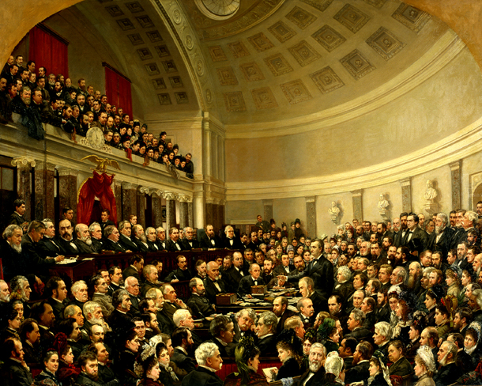

Directions: Fill in the chart as we build the ending. Keep this page in your notebook. You will use it again on the review day before the unit test.

| The piece | What happened | What it settled | What it left open |
|---|---|---|---|
| The election of 1876 | |||
| The commission | |||
| The bargain | |||
| The settled account | |||
| The open account |
The ending in one sentence. Finish this sentence in your own words, using at least two rows of the chart as evidence. Reconstruction ended the way it did, and settled what it settled, because...
| The piece | What happened | What it settled | What it left open |
|---|---|---|---|
| The election of 1876 | Tilden won the popular vote by some quarter of a million votes and stood one electoral vote short. Twenty electoral votes from Florida, Louisiana, South Carolina, and Oregon were disputed, on returns Frost's cartoon had already pictured as manufactured by terror. | Nothing yet. The count itself was the open question. | Whether returns from states whose elections had not been free would decide the presidency. |
| The commission | Congress created a fifteen member Electoral Commission, five senators, five representatives, and five justices. It awarded every disputed vote to Hayes by eight to seven, for a final count of 185 to 184. | Who would be president. Hayes would take office in March 1877. | Whether a party line count could command the losing side's acceptance without a bargain behind it. |
| The bargain | Southern Democratic leaders let the count finish in return for a southern cabinet seat, support for southern internal improvements, and withdrawal of the last federal troops. Hayes named David M. Key postmaster general, and in April 1877 the troops left Columbia and New Orleans. | The transfer of power, and the end of the last two Reconstruction governments. | Everything the troops had been protecting, from Black voters to the Republican governments themselves. |
| The settled account | The Thirteenth Amendment had abolished slavery, the Fourteenth had defined citizenship and guaranteed due process and equal protection, and the Fifteenth had protected the vote against denial on account of race, color, or previous condition of servitude. | The constitutional text itself, beyond repeal by ordinary law, with Congress armed to enforce each amendment. | Nothing in the text. The account's open side is enforcement, not wording. |
| The open account | Land was never redistributed. Freedpeople's schools and governments stood under Redeemer rule, and the amendments' enforcement was stood down in the spring of 1877. | The Redeemers' home rule over every southern state. | Land, protection, and the amendments' enforcement, left to a future this lesson names only as framing. |
The ending in one sentence. Strong answers join the count to the audit. Reconstruction ended the way it did, and settled what it settled, because a disputed election was decided by a party line commission and accepted only through a bargain whose price was the last federal protection in the South, while the amendments the unit has read stood unrepealed in the Constitution and their enforcement was stood down in a single spring.